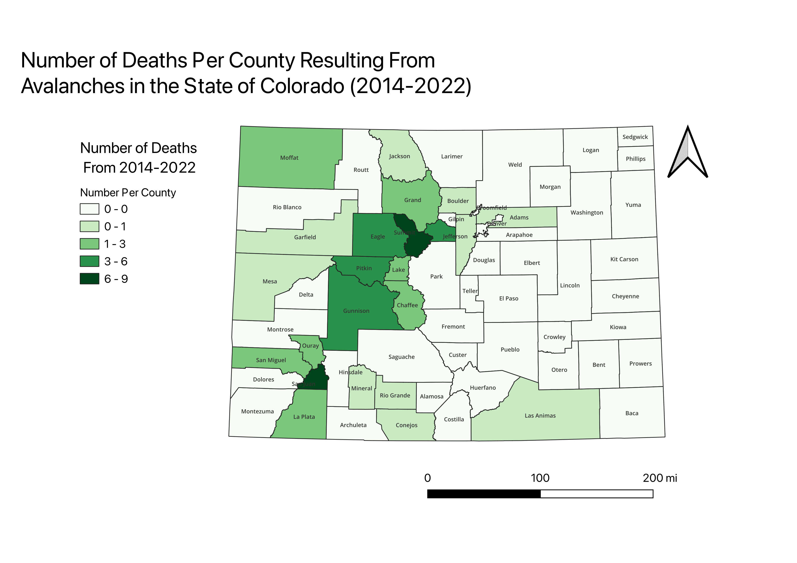

Homework 7
Edith Sherlock
This map is a representation of the number of deaths caused by avalanches in Colorado counties spanning from 2013-2023. I thought that a chloropleth would provide for the most interesting representation, as it is able to truly show the scope of where these incidents are most likely to occur. I found this data interesting because it shows how common avalanche related deaths are, as well as where they're most likely to occur in the state of Colorado. Growing up in a location where alavalches are a constant threat, and having known several people who have died in avalanches, I really wanted to understand locationally where in the Rocky Mountains an avalanche accident is most likely to occur.

GeoJSON
Cleaned CSV Data
Originial Aalanche Dataset Source